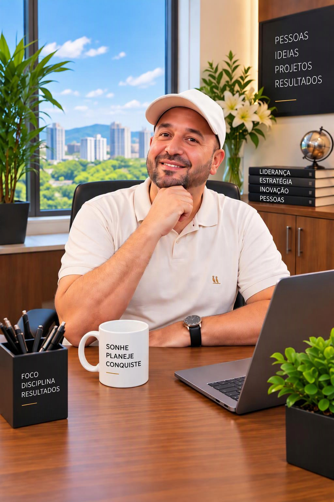

Ana Lia Vandoni
Desenvolvimento humano e comunicação
Trajetória construída em multinacionais, especialista em desenvolvimento humano, educação e comunicação. Sua experiência em liderança e treinamento a tornou referência em traduzir conceitos complexos em uma linguagem simples, envolvente e acessível.
Mara Muniz
Educadora · 39 anos de atuação
Educadora formada em Pedagogia, com 39 anos de atuação em autoconhecimento, com atendimentos individuais e empresariais. Aprofundou-se em Psicologia Junguiana, Filosofia e Mitologia. Autora de “O Universo e Eu”.

Felipe Gonçalves
Fundador do Entre Estrelas
Cientista da Computação, com pós-graduação em Marketing e Finanças. Atuou em empresas como IBM e Microsoft. PNL Master, com formação em Psicologia Analítica e mais de 500 atendimentos em autoconhecimento.